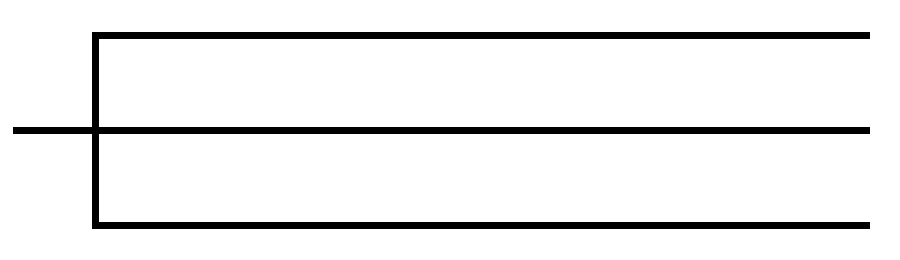

Twelve Basic
English Tenses
English Tenses are verb forms used to tell you when a person did something or when something existed or happened (eg : went, go, will go) In English, there are three main tenses: the Present, the Past, and the Future. There are twelve tense forms in English. For English learners, knowing how to use English tenses can be quite a challenge. But never fear, this tutorial will teach you to think like a native speaker.

Simple Present
The simple present is a verb tense with two main uses. We use the simple present tense when an action is happening right now, or when it happens regularly.
Example:
He goes out every Saturday night.
The bus arrives in London at 6 p.m.
Present Continuous
The present continuous verb tense indicates that an action or condition is happening now, frequently, and may continue into the future.
Example:
Aunt Christine is warming up the car.
The waiter is standing behind the counter.
Present Perfect
The present perfect tense refers to an action or state that either occurred at an indefinite time in the past or began in the past and continued to the present time.
Example:
We have talked before.
He has grown impatient over the last hour.
Present Perfect Present
The present perfect continuous tense present perfect progressive tense) shows that something started in the past and is continuing at the present time.
Example:
I have been reading that book for a month now.
Mia has been competing in dancing recently.
Simple Past
The simple past is a verb tense use to talk about things or situations which happened in the past, that is, before the present time of speaking.
Example:
I met Lisa yesterday.
I phoned him three times today.
Past Continuous
The past continuous tense, also known as the past progressive tense, refers to a continuing action or state that was happening at some point in the past.
Example:
The sun was shining every day that summer.
The children were laughing at my cleverness.
Pase Perfect
The past perfect, is a verb tense used to talk about actions that were completed before some point in the past (something that happened before something else).
Example:
We were shocked to discover that someone had graffitied “Tootles was here” on our front door.
Past Perfect Present
The past perfect continuous tense shows that an action that started in the past continued up until another time in the past.
Example:
He had been drinking milk out the carton when Mom walked into the kitchen.
Simple Future
The simple present is a verb tense with two main uses. We use the simple present tense when an action is happening right now, or when it happens regularly.
Example:
He goes out every Saturday night.
The bus arrives in London at 6 p.m.
Future Continuous
The future continuous tense, is a verb tense that indicates that something will occur in the future and continue for an expected length of time.
Example:
I will be watching Michael and Eric race.
I will arrive at five o’clock.
Future Perfect
The future perfect tense is for talking about an action that will be completed between now and some point in the future.
Example:
The parade will have ended by the time Chester gets out of bed. At eight o’clock I will have left.
Future Perfect Continuous
The future perfect continuous (future perfect progressive), is a verb tense that describes actions that will continue up until a point in the future.
Example:
I will have been waiting for thirty minutes.
I will have been playing piano for twenty years.